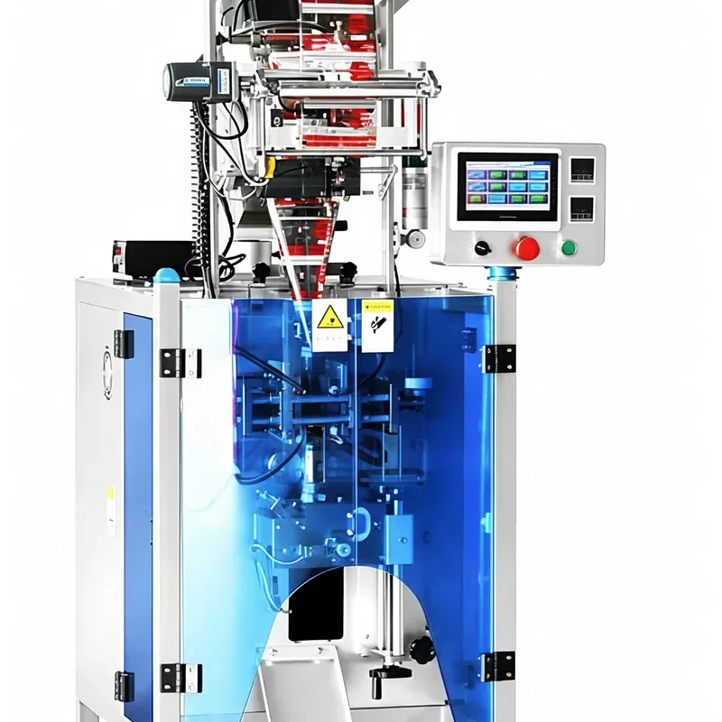
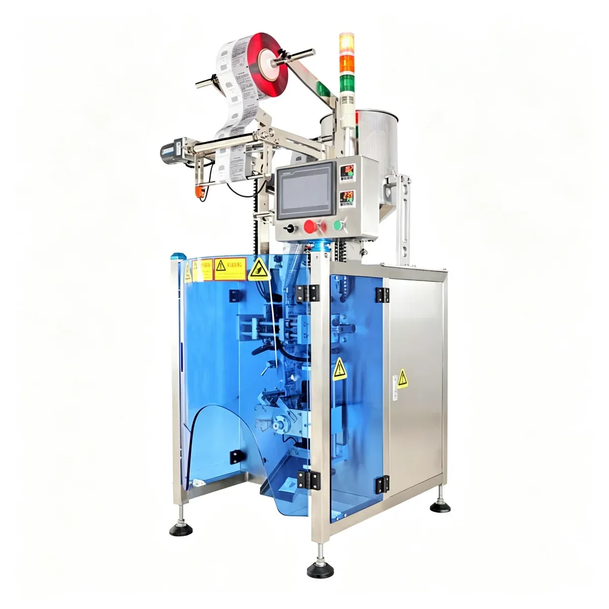

Sachet Packaging Machines
High-Speed Automatic Powder Sachet Packing Machine
The PBF-220 High-Speed Automatic Powder Sachet Packing Machine is designed for fast and accurate packaging of dry powder products into small sachets. The machine combines auger dosing, bag forming, powder filling, heat sealing, cutting and optional date printing in one automatic packaging system.
Specifications
- Model
- PBF-220
- Machine Type
- High-Speed Automatic Powder Sachet Packing Machine
- Voltage
- 110 V / 220 V, 50–60 Hz
- Power
- Approx. 2 kW
- Packaging Speed
- Approx. 40–100 sachets/min
- Filling Range
- 1–100 g
- Filling Method
- Auger Filling
- Sachet Length
- 20–145 mm
- Sachet Width
- 20–110 mm
- Sealing Type
- Back Seal / 3-Side Seal / 4-Side Seal
- Hopper Capacity
- Approx. 10 L
- Machine Size
- Approx. 900 × 700 × 1720 mm
- Machine Weight
- Approx. 250 kg
- Control Interface
- Touchscreen
- Interface Language
- Customizable
- Date Coding
- Optional